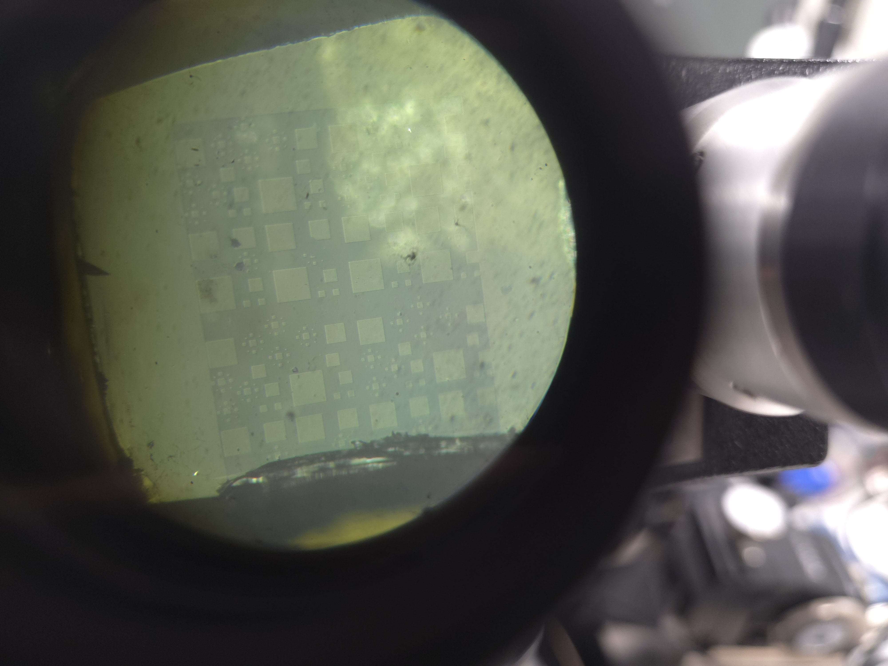

Characterization of Probabilistic Polarization in Ferroelectric PZT Thin Films

Background
Ferroelectric materials exhibit a spontaneous electric polarization that can be switched by an applied field — a property that makes them attractive for non-volatile memory, energy harvesting, and neuromorphic computing applications. Lead zirconate titanate (PZT) is one of the most widely studied ferroelectrics, but the switching behavior in thin-film geometries is inherently stochastic: domain nucleation and growth are probabilistic processes that depend sensitively on film quality, thickness, and measurement conditions.
Research questions
This thesis focuses on quantifying and characterizing the probabilistic nature of polarization switching in PZT thin films. Key questions include: how does the switching probability distribution change with pulse amplitude and duration, what structural and defect features govern the switching statistics, and how do these properties evolve with film thickness and deposition conditions?
Methods
Experimental work was carried out in the Caretta Lab at Brown University using thin-film PZT samples. Characterization techniques included:
- Electrical measurements — PUND (Positive Up Negative Down) pulse sequences and time-domain polarization switching measurements to extract switching statistics as a function of voltage and pulse width
- Structural characterization — analysis of film microstructure to correlate switching behavior with film quality
- Statistical modeling — fitting switching probability distributions to nucleation-limited switching models
Lab automation for the measurement campaign was supported by the PIEC Python package (co-developed as a parallel project), which enabled scalable, reproducible electrical measurements across large device arrays.
Significance
Understanding probabilistic switching is important for both fundamental ferroelectric physics and device engineering. For memory applications, switching variability sets a floor on device reliability; for neuromorphic applications, controlled stochasticity may actually be a feature. This work contributes quantitative characterization of that variability in a technologically relevant material system.